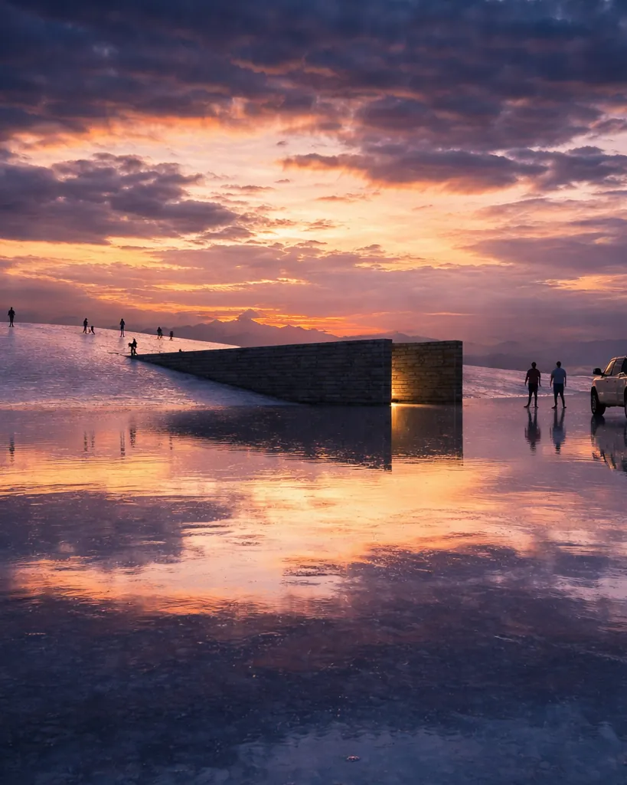
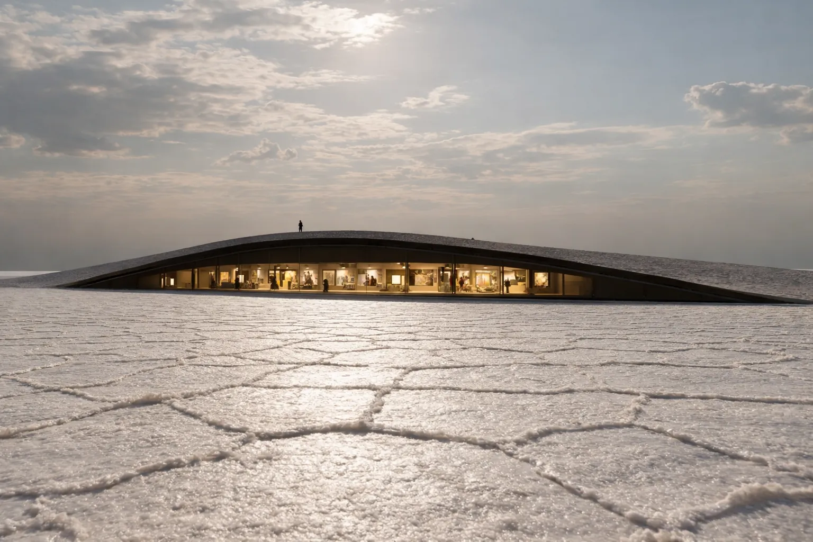

- Type
- Conceptual architecture
- Location
- Salar de Uyuni, Bolivia
- Year
- 2026
- Area
- 500 m²
- Status
- Competition entry
- Process
-
- Idea
- Transformation
- Matter
Idea
THE REFRACTION was born from a reflection on the way we experience the contemporary world. We inhabit a reality dominated by appearances, where experiences are consumed through images, representations and constructed identities. We have grown used to observing from the comfort of the familiar, without questioning what lies beyond the surface.
The proposal finds its origin in this contradiction: we live surrounded by possibilities to observe the world, yet we find fewer and fewer opportunities to truly experience it.
Set in the Salar de Uyuni, Bolivia, the project draws on one of the landscape’s most extraordinary natural conditions: the seasonal transformation of its surface into an immense mirror that reflects the sky, the clouds and the stars, blurring the boundaries between earth and sky.
Instead of the conventional approach of an observation tower, THE REFRACTION proposes an inverse architectural operation. Rather than raising a structure foreign to the territory, it imagines an incision in the salt flat and the lifting of a portion of its surface, as if the landscape itself were coming loose from the ground to become architecture.
This intervention creates two complementary experiences. Beneath the raised surface, an exhibition gallery dedicated to the salt flat represents the world of mediated knowledge: what we observe, interpret and consume through a representation. Above it, an open lookout confronts the visitor with the immensity of the real landscape, with no intermediaries.
The use of timber beams, steel, glass and exposed concrete makes it possible to conceive a contemporary structure that contrasts with the apparent natural continuity of the terrain. The top cladding, made of material from the salt flat itself, reinforces the intention of blurring the boundaries between architecture and landscape.
The route thus traces a transition from contemplating a represented reality to a direct encounter with nature.
THE REFRACTION questions the boundaries between observing and experiencing, between knowing an image and inhabiting what it represents. An architecture that does not seek to impose itself on the landscape, but to use it to provoke a reflection on our own way of looking.



Process
The project arose as a response to the international competition Observation Tower, organized by Archibest, whose brief invited entrants to imagine an observation tower anywhere on the planet.
The freedom of the brief became the first challenge. With no predetermined site, conventional architectural program or specific client needs, the process began with a fundamental question: which place in the world deserves to be observed, and how should architecture intervene to make that possible?
Choosing the Salar de Uyuni made it possible to develop a proposal in which the landscape was not only the setting of the intervention, but its main conceptual argument.
The decision to replace the vertical tower with a lifting of the ground itself transformed the traditional idea of the observatory. Architecture was no longer understood as an object to look from, but as a route able to reveal different dimensions of the territory.
The lower gallery and the upper lookout set up a relationship between the contained and the boundless, the represented and the real. The intervention invites visitors to experience the salt flat from different perspectives: from inside, from outside, from below and from above its surface.
The proposal received an honorable mention in Archibest’s Observation Tower competition, a recognition that is part of ARQUEMIST.’s path of architectural exploration.
Technical data
- Type
- Conceptual architecture / International competition / Lookout and exhibition space
- Competition
- Observation Tower — Archibest
- Recognition
- Honorable mention
- Status
- Unbuilt conceptual competition entry
- Area
- Approximately 500 m² in total
- Materials
- Timber beams, glass, steel, exposed concrete and top cladding made with material from the salt flat itself.
- Images
- Digital architectural visualizations, competition boards and conceptual diagrams.
- Documentation
- Digital honorable mention diploma awarded by Archibest.
- Credits
- ARQUEMIST.

“Looking at the world is not enough. We must dare to experience it.”